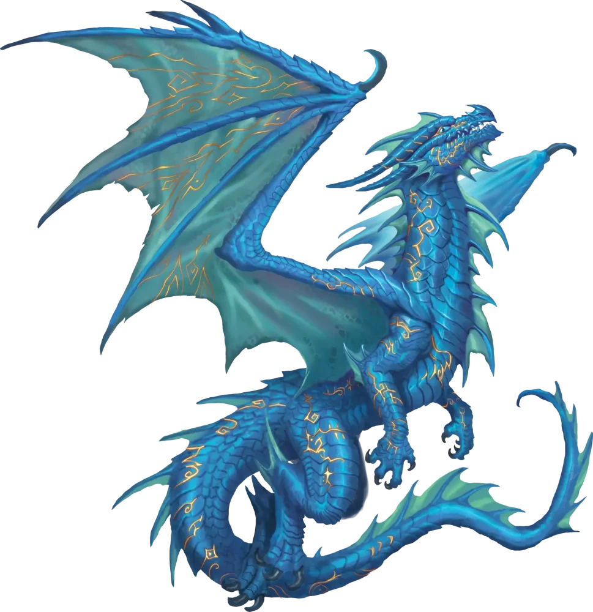

各年龄段数据卡
蔚蓝龙极少能活到晋升太古龙的年岁。这一现象背后藏着一个再简单不过的事实：随着蔚蓝龙年岁渐长、探索欲愈发大胆无畏，它们踏足的地域也会变得越来越诡谲莫测、人迹罕至且凶险万分，甚至常常深入其他星球与异界位面。如此一来，它们便将自己暴露在了巨大的危险之下；有时候，哪怕是巨龙也会迎来好运耗尽的那一天。凡能成为太古蔚蓝龙者，无一不是一次又一次从现实边缘那些绝境险地中平安归来的幸存者――因此，早在获得太古龙的完整威能之前，它们就已在审时度势、择路避险与挑拣对手方面练就了登峰造极的本领。正因如此，它们继续造访的那些险恶之地对它们而言几乎已构不成半点威胁；这意味着一旦蔚蓝龙晋升太古龙，它们就几乎不可能再在远征途中失踪遇难――除非有某个极其可怕的强敌特意在半途设下天罗地网伏击它们，或是发生了其他同等惨烈的灭顶灾劫。 得益于这份超凡本领与执着痴迷，太古蔚蓝龙堪称探索现实世界中奇异未知领域的顶尖行家。话虽如此，每当邂逅怀有同样探索热忱的旅途同道时，它们通常都会表现出令人惊叹的大度与欣喜，绝不会心生嫉妒或摆出轻蔑之态。像太古相位龙“永恒漫游者”奥德赛阿纳提斯这样声名远扬的传奇旅者，在太古蔚蓝龙群体中永远备受欢迎；无论何时，只要这等贵客偶遇一位太古蔚蓝龙东道主，必定会受到热情洋溢的欢迎与盛情款待。 由于很少有蔚蓝龙会营建传统意义上的固定巢穴――这样它们便能无牵无挂地继续四海漫游，既不必定期折返同一地点，也无需提防盗宝贼光顾――绝大多数太古蔚蓝龙都各自开发出了独具特色的替代方案，而且往往带有浓厚的魔法色彩。异次元领域在它们之中极受欢迎，尤其是当蔚蓝龙能设法从多元宇宙的任何角落随时开启通往自家领域的传送门时更是如此。而在擅长施法的太古蔚蓝龙当中，另一个绝佳选择便是每逢决定暂停无休止的旅途、歇脚过夜之时，随手凭空筑起一座宏伟舒适、宛若华美巢穴般的璀璨豪宅。 尽管鲜有太古蔚蓝龙无端主动袭击他人的记载，但历史上确实发生过领地意识极强或惊弓之鸟般的社群，企图将恰巧飞越边境进入其领空的旅行太古蔚蓝龙击落，结果导致冲突急剧升级、酿成惨重伤亡的案例。太古蔚蓝龙不想像太古红龙那样肆意横行破坏，绝不代表它们软弱可欺。一旦结怨，它们会是令人胆寒的恐怖大敌――尤其是因为它们平日从不四处劫掠树敌，所以一旦激怒了它们，你很可能会成为承受其全部雷霆怒火的唯一目标。 多元宇宙探险家莫说在这方世界，即便放眼整个多元宇宙，太古蔚蓝龙也是最为炉火纯青的顶尖探险家；因此，在半位面、口袋维度以及宇宙中近乎不可触及的偏远边陲里，许多最伟大、最隐秘的地理发现都要归功于某条太古蔚蓝龙。正因如此，你有时会发现这类秘境沿用了发现它的那条太古蔚蓝龙所起的龙语命名惯例。而另一些太古蔚蓝龙则单纯以抵达前人未至之境为傲，压根懒得停下脚步为自己的新发现命名。 |
 太古蔚蓝龙 |